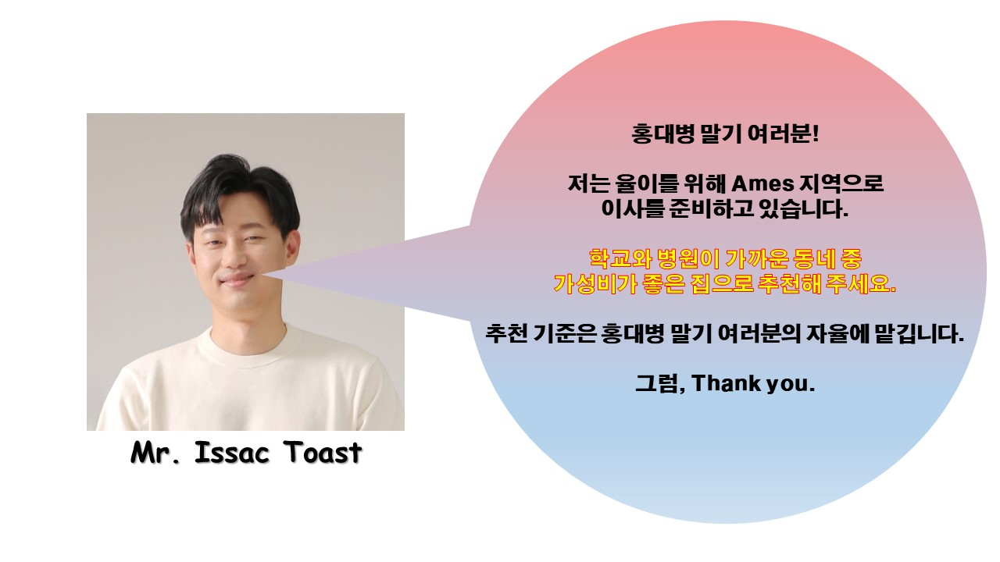

Neighborhood
28
Hospital
17
School
9
| Rank | Neighborhood | Center Latitude | Center Longitude | Min School Distance (meters) | Min Hospital Distance (meters) | Average Facility Distance (meters) |
|---|---|---|---|---|---|---|
| 1 | Northpark_Villa | 42.050382 | -93.625930 | 203 | 600 | 401 |
| 2 | North_Ames | 42.042354 | -93.617564 | 339 | 530 | 435 |
| 3 | Briardale | 42.052068 | -93.628443 | 230 | 876 | 553 |
| 4 | Edwards | 42.022039 | -93.666655 | 1056 | 61 | 558 |
| 5 | College_Creek | 42.019277 | -93.686823 | 395 | 767 | 581 |
선택된 동내에서 좋은 집 을 찾기 위해서 점수를 주는 과정